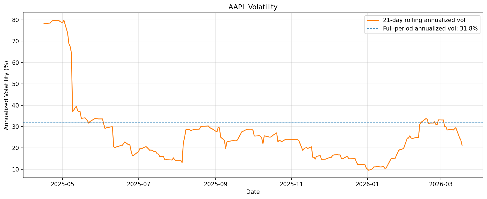

Finance analysis in plain English —
no Python required
Describe what you need. The Finance AI Skill writes the code, runs the analysis, and explains the results — so you focus on the decision, not the data.
Get Started Free
What it does
Market Analysis
Price charts, returns, volatility, risk metrics, peer comparisons, and correlation heatmaps — for any publicly traded stock.
ML Workflows
Upload your data. Train regression and classification models. Score new observations. No Python setup, no sklearn boilerplate.
Role Walkthroughs
Step-by-step scenarios for equity research, hedge funds, investment banking, FP&A, private equity, and accounting.
Built for how you work
Equity Research
Coverage initiation, peer comps, risk profiling
Hedge Fund
Volatility regimes, pair trading, cross-sector correlation
Investment Banking
Comparable company analysis, deal pitch exhibits
FP&A
ERP data profiling, liquidity forecasting, budget variance
Private Equity
Deal scoring, IC memo prep, portfolio monitoring
Accounting & Control
Transaction profiling, anomaly detection, ERP review
Real output from real data


Built on the Python & Machine Learning for Finance curriculum. Free and open source.